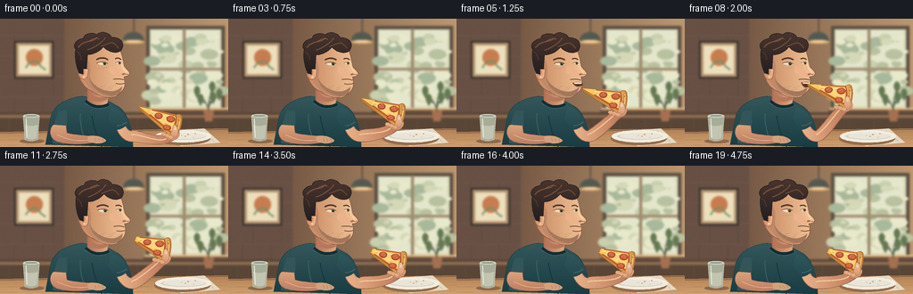
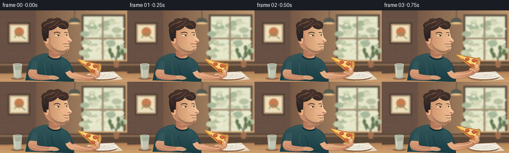

CODING AGENTS AS PIXEL WORLD MODELS
traex/GPT-6.1-Sol · motion_rationality_0009
点击播放 · 原生 RGB 像素
逐轮保存的候选
回放视频、检查图与代码变化。
每份候选均可单独播放。实际图片检查记录在下方工具轨迹中。
候选 01播放与检查图
点击播放 · 原生 RGB 像素


展开代码变化
--- 上一保存版本
+++ 本次保存版本
@@ -0,0 +1,262 @@
+"""Procedural, supersampled illustration of a person taking a bite of pizza."""
+from pathlib import Path
+import math
+import numpy as np
+from PIL import Image, ImageDraw, ImageFilter
+import artifact_io
+
+ROOT=Path(__file__).resolve().parent
+W,H,S=256,144,4
+SZ=(W*S,H*S)
+
+def rgb(c):
+ if isinstance(c,str):
+ c=c.lstrip('#'); return tuple(int(c[i:i+2],16) for i in (0,2,4))
+ return tuple(c)
+
+def points_path(commands):
+ out=[]; cur=None; first=None
+ for cmd in commands:
+ k=cmd[0]; v=cmd[1:]
+ if k=='M': cur=(v[0],v[1]);first=cur;out.append(cur)
+ elif k=='L': cur=(v[0],v[1]);out.append(cur)
+ elif k=='C':
+ p=cur
+ for t in np.linspace(0,1,24)[1:]:
+ z=1-t
+ out.append((z**3*p[0]+3*z*z*t*v[0]+3*z*t*t*v[2]+t**3*v[4],z**3*p[1]+3*z*z*t*v[1]+3*z*t*t*v[3]+t**3*v[5]))
+ cur=(v[4],v[5])
+ elif k=='Q':
+ p=cur
+ for t in np.linspace(0,1,16)[1:]:
+ z=1-t;out.append((z*z*p[0]+2*z*t*v[0]+t*t*v[2],z*z*p[1]+2*z*t*v[1]+t*t*v[3]))
+ cur=(v[2],v[3])
+ elif k=='Z':out.append(first);cur=first
+ return out
+
+class Painter:
+ def __init__(self,im,transform=None):self.im=im;self.d=ImageDraw.Draw(im);self.transform=transform or (lambda x,y:(x,y))
+ def p(self,p):return tuple(v*S for v in self.transform(*p))
+ def path(self,commands,fill=None,stroke=None,width=1,gradient=None):
+ pts=[self.p(p) for p in points_path(commands)]
+ if fill or gradient:
+ if gradient:
+ mask=Image.new('L',SZ);ImageDraw.Draw(mask).polygon(pts,fill=255)
+ col1,col2,axis=gradient;c1=np.array(rgb(col1));c2=np.array(rgb(col2))
+ mn=min(p[axis] for p in pts);mx=max(p[axis] for p in pts)
+ ar=np.clip((np.arange(SZ[axis])-mn)/max(1,mx-mn),0,1)
+ cs=(c1[None,:]*(1-ar[:,None])+c2[None,:]*ar[:,None]).astype(np.uint8)
+ if axis==1: a=np.repeat(cs[:,None,:],SZ[0],axis=1)
+ else:a=np.repeat(cs[None,:,:],SZ[1],axis=0)
+ layer=Image.fromarray(a);self.im.paste(layer,(0,0),mask)
+ else:self.d.polygon(pts,fill=rgb(fill))
+ if stroke:self.d.line(pts,fill=rgb(stroke),width=max(1,round(width*S)),joint='curve')
+ def poly(self,pts,fill,stroke=None,width=1):
+ self.path([('M',*pts[0])]+[('L',*p) for p in pts[1:]]+[('Z',)],fill,stroke,width)
+ def line(self,pts,fill,width=1):self.d.line([self.p(p) for p in pts],fill=rgb(fill),width=max(1,round(width*S)),joint='curve')
+ def ellipse(self,box,fill,stroke=None,width=1):
+ # transform each point to support pizza-local rotation
+ x0,y0,x1,y1=box
+ pts=[((x0+x1)/2+(x1-x0)/2*math.cos(t),(y0+y1)/2+(y1-y0)/2*math.sin(t)) for t in np.linspace(0,2*math.pi,64)]
+ self.poly(pts,fill,stroke,width)
+ def rect(self,box,fill):
+ x0,y0,x1,y1=box;self.poly([(x0,y0),(x1,y0),(x1,y1),(x0,y1)],fill)
+
+def smooth(x):
+ x=max(0,min(1,x));return x*x*(3-2*x)
+
+# Soft, warm neighborhood pizzeria: no typography or borrowed imagery.
+y,x=np.mgrid[0:H*S,0:W*S];xx=x/S;yy=y/S
+base=np.zeros((H*S,W*S,3),dtype=np.float32)
+f=np.clip(xx/W,0,1)
+for c,(a,b) in enumerate(zip((93,67,55),(193,155,114))):base[:,:,c]=a+(b-a)*f
+vign=((xx-142)**2/(250**2)+(yy-60)**2/(190**2))*14
+base-=vign[:,:,None]
+bg=Image.fromarray(np.uint8(np.clip(base,0,255)))
+b=Painter(bg)
+# wooden wall and small framed art
+b.rect((0,0,72,115),'685044')
+for sy in (19,42,65,88):
+ b.line([(0,sy),(72,sy)],'755a49',.7)
+ for sx in (16,48):b.line([(sx+(12 if (sy//20)%2 else 0),sy),(sx+(12 if (sy//20)%2 else 0),sy+22)],'5d463b',.65)
+b.rect((16,25,60,67),'342f2b');b.rect((18,27,58,65),'b59470');b.rect((21,30,55,62),'ede0bd')
+b.ellipse((29,34,48,53),'c77d50');b.path([('M',29,55),('Q',35,45,42,48),('Q',45,54,51,57)],stroke='7a8e69',width=2)
+# bright window with out-of-focus foliage
+b.rect((164,8,252,104),'5c5144');b.rect((168,12,248,100),'dddbbd')
+b.rect((170,13,245,98),'e5e7cd')
+rng=np.random.default_rng(912)
+for _ in range(75):
+ cx=rng.uniform(169,248);cy=rng.uniform(20,94);r=rng.uniform(2,11)
+ color=['c8d0ae','b9c2a0','d6d9b8','e9e9cb','a9b99b'][rng.integers(5)]
+ b.ellipse((cx-r,cy-r*.6,cx+r,cy+r*.6),color)
+b.rect((205,11,208,101),'9c876a');b.rect((168,55,248,58),'a38e71')
+b.rect((161,101,256,106),'715440');b.rect((162,100,256,102),'e1bd89')
+# pendant, café seat and plant
+b.line([(150,0),(150,16)],'403b33',1)
+b.path([('M',138,25),('Q',139,15,150,15),('Q',160,15,162,25),('Z',)],fill='555a51')
+b.ellipse((138,24,162,28),'e6b875');b.ellipse((142,24,158,26),'ffdeb0')
+b.rect((0,105,256,126),'594637');b.rect((0,108,256,111),'927156')
+for px in (10,39,67,96,125,154,183,212,241):b.line([(px,112),(px,125)],'634b3c',.8)
+b.path([('M',228,102),('L',240,102),('L',238,115),('L',230,115),('Z',)],fill='a57150')
+for (ex,ey) in [(221,84),(238,79),(246,87),(225,93),(239,91)]:
+ b.path([('M',234,104),('Q',233,93,ex,ey)],stroke='59654d',width=1.2)
+ b.path([('M',ex,ey+5),('Q',ex-7,ey-5,ex,ey-9),('Q',ex+7,ey-5,ex,ey+5),('Z',)],fill='657953')
+bg=bg.filter(ImageFilter.GaussianBlur(1.15*S))
+# foreground tabletop, mellow perspective wood grain
+b=Painter(bg)
+b.path([('M',0,127),('L',256,123),('L',256,144),('L',0,144),('Z',)],gradient=('b18257','d2a170',1))
+for yy0 in [129,136,142]:
+ b.path([('M',0,yy0),('C',72,yy0-1,151,yy0+1,256,yy0-2)],stroke='ac7f56',width=.4)
+b.line([(0,128),(256,124)],'7f5b40',1)
+# plate and linen
+b.poly([(186,126),(229,123),(247,139),(203,143)],'e5d9c2')
+b.line([(191,128),(226,126),(240,138)],'c4b59c',.5)
+b.ellipse((173,127,236,142),'966d4c');b.ellipse((174,125,237,139),'f3ede0');b.ellipse((180,128,231,136),'d9d3c5');b.ellipse((183,128,230,135),'e9e5d8')
+for cx,cy,r in [(208,132,.7),(211,130,.8),(217,133,.45),(219,129,.7),(204,131,.4)]:b.ellipse((cx-r,cy-r/2,cx+r,cy+r/2),'be8646')
+# softly translucent tumbler at left
+b.ellipse((22,135,50,140),'8e694c')
+b.path([('M',26,109),('Q',35,107,44,109),('L',42,136),('Q',35,139,28,136),('Z',)],fill='a8ad9a',stroke='d1cfb6',width=.6)
+b.path([('M',28,119),('Q',35,122,42,119),('L',41,134),('Q',35,137,29,134),('Z',)],fill='c1c5b1')
+b.ellipse((26,107,44,111),'d5d9c7');b.ellipse((28,108,42,110),'949f93');b.line([(29,112),(30,133)],'eeebd6',1.1)
+
+
+def make_frame(index):
+ t=index/4
+ approach=smooth((t-.1)/1.6)
+ withdraw=smooth((t-2.35)/1.1)
+ reach=approach*(1-.72*withdraw)
+ bitten=t>=2.25
+ chew=max(0,math.sin((t-2.45)*math.pi*3.0)) if t>2.45 else 0
+ breath=.18*math.sin(t*2)
+ im=bg.copy();d=Painter(im)
+ # body / tee: solid sculpted silhouette and subtle folds
+ d.path([('M',93,87),('C',78,88,62,95,57,110),('L',51,141),('L',149,144),('C',149,127,145,105,130,97),('L',119,91),('Z',)],gradient=('34585b','183d43',1),stroke='244248',width=.65)
+ d.path([('M',66,103),('Q',59,119,59,140),('L',72,141),('Q',76,119,75,103),('Z',)],fill='32565a')
+ d.path([('M',90,106),('Q',89,123,97,139)],stroke='3b6263',width=.9)
+ d.path([('M',103,109),('Q',105,124,114,144)],stroke='12363d',width=1)
+ d.path([('M',77,136),('Q',89,132,103,136)],stroke='254a50',width=.8)
+ # resting left arm on the table
+ d.path([('M',60,119),('C',54,124,55,135,65,138),('C',77,142,96,141,110,138),('L',111,132),('C',98,132,79,130,75,128),('L',74,120),('Z',)],gradient=('dba37c','be7e61',1),stroke='9a624e',width=.55)
+ d.path([('M',64,130),('Q',82,139,98,136)],stroke='e1af86',width=1)
+ d.path([('M',98,132),('C',107,130,117,133,119,137),('Q',117,140,108,140),('L',99,138),('Z',)],fill='d5a17c')
+ for xx0 in (106,110,114):d.path([('M',xx0,134),('Q',xx0+2,136,xx0+1,138)],stroke='b67b5f',width=.5)
+ # neck under face
+ d.path([('M',98,75),('L',98,93),('Q',108,103,120,97),('L',123,80),('Z',)],gradient=('b27156','e3ae82',0),stroke='a56c53',width=.65)
+ d.path([('M',100,83),('Q',108,91,121,87),('L',120,91),('Q',108,96,100,89),('Z',)],fill='b7785c')
+ d.path([('M',96,92),('Q',107,103,122,96)],stroke='102f36',width=3.2)
+ d.path([('M',95,94),('Q',108,106,124,97)],stroke='42686a',width=.7)
+ # pizza motion transform, kept attached to the hand
+ ox=155-18*approach+13*withdraw
+ oy=98-25*approach+18*withdraw
+ angle=math.radians(7-10*approach+5*withdraw)
+ co,si=math.cos(angle),math.sin(angle)
+ def pt(x,y):return (ox+x*co-y*si,oy+x*si+y*co)
+ wx,wy=pt(41,28)
+ # bent right forearm, elbow anchored beside torso
+ d.path([('M',137,116),('C',141,118,141,125,147,126),('C',153,122,wx-16,wy+7,wx-5,wy-3),('L',wx+4,wy+4),('C',wx-8,wy+15,159,139,148,138),('C',139,138,133,130,130,122),('Z',)],gradient=('ecb58b','bd7a5b',0),stroke='9b634c',width=.7)
+ d.path([('M',147,130),('C',155,128,wx-13,wy+10,wx-5,wy+3)],stroke='f1c497',width=1.4)
+ d.path([('M',125,99),('C',135,101,141,109,144,117),('Q',139,124,130,125),('L',121,112),('Z',)],gradient=('31585c','23474e',1))
+ d.path([('M',131,120),('Q',137,120,142,116)],stroke='507071',width=.8)
+ # head leans only fractionally; identity and face remain stable
+ hx=.85*reach;hy=.35*reach+breath
+ h=Painter(im,lambda x,y:(x+hx,y+hy))
+ jaw=.35*chew
+ h.path([('M',88,40),('C',88,23,110,17,125,27),('C',137,31,137,44,139,51),('C',139,55,144,57,145,60),('Q',147,64,139,65),('C',141,72,141,79+jaw,134,84+jaw),('C',126,92+jaw,112,88,103,81),('C',91,77,85,63,88,40),('Z',)],gradient=('c88a64','f4c799',0),stroke='8c5946',width=.65)
+ # shade at temple and jaw, illuminated cheek
+ h.path([('M',91,43),('Q',103,42,101,62),('C',100,76,115,86,131,85),('Q',123,91,110,84),('C',95,78,90,62,91,43),('Z',)],fill='c18a68')
+ h.path([('M',123,53),('C',127,55,136,56,138,65),('C',132,66,125,63,122,59),('Z',)],fill='edb38c')
+ h.path([('M',136,44),('Q',135,54,142,60)],stroke='ffd7a7',width=1.05)
+ h.path([('M',139,61),('Q',141,63,144,62)],stroke='a76851',width=.8)
+ h.ellipse((136.9,61.3,139.8,63.1),'a66a52')
+ # ear, visible side plane
+ h.path([('M',95,52),('C',89,47,86,51,88,62),('C',89,69,96,70,98,65),('L',99,57),('Z',)],gradient=('d18f6b','eeb88a',0),stroke='a26951',width=.65)
+ h.path([('M',92,55),('C',87,54,91,63,93,63),('Q',96,59,93,58)],stroke='b47659',width=.85)
+ h.ellipse((93,64,95,66),'efd1a8')
+ # thick swept brown hair with softly separated locks
+ h.path([('M',89,61),('C',86,56,83,43,85,34),('C',80,29,88,22,94,22),('C',94,16,105,15,109,18),('C',114,12,124,17,125,21),('C',135,20,141,28,136,35),('C',132,40,121,38,116,31),('C',112,37,103,41,98,40),('L',97,56),('L',93,56),('L',93,62),('Z',)],gradient=('4b352e','241f20',1),stroke='292321',width=.7)
+ h.path([('M',88,32),('C',95,23,104,27,109,21)],stroke='75503a',width=1.5)
+ h.path([('M',98,35),('C',105,33,116,26,118,21)],stroke='71503b',width=1.35)
+ h.path([('M',113,31),('C',120,29,125,25,128,28),('Q',131,30,133,33)],stroke='6b4a35',width=1.3)
+ h.path([('M',86,37),('Q',90,38,91,46)],stroke='4f3c30',width=1)
+ h.path([('M',100,25),('Q',108,20,111,23)],stroke='8a6244',width=.7)
+ # eyebrows and eyes. A satisfied blink follows the bite.
+ h.path([('M',108,46),('Q',115,42,121,46)],stroke='50372c',width=1.8)
+ h.path([('M',129,45),('Q',133,43,136,46)],stroke='50372c',width=1.35)
+ blink=(index in (12,13,18))
+ if blink:
+ h.path([('M',109,51),('Q',115,54,120,50)],stroke='654630',width=.9)
+ h.path([('M',130,50),('Q',133,52,136,49)],stroke='654630',width=.7)
+ else:
+ h.path([('M',108.5,50),('Q',114.5,46.7,120.6,50.3),('Q',115,53.8,108.5,50),('Z',)],fill='f0debe')
+ h.ellipse((115.5,48.4,119.1,52.0),'6b6650');h.ellipse((116.6,48.8,118.7,51.8),'292f2b');h.ellipse((117.5,49,118.1,49.7),'fff0cc')
+ h.path([('M',108.5,50),('Q',115,47.1,120.6,50.3)],stroke='684632',width=.7)
+ h.path([('M',129.5,49.5),('Q',133,47,136,49.4),('Q',133,52,129.5,49.5),('Z',)],fill='ebd6b4')
+ h.ellipse((133,48.2,135.4,51.1),'424537');h.path([('M',129.5,49.5),('Q',133,47.3,136,49.4)],stroke='684632',width=.6)
+ h.path([('M',109,55),('Q',115,57,120,54)],stroke='c99370',width=.45)
+ # subtle beard along jaw, avoiding big flat shapes
+ h.path([('M',100,66),('C',104,74,111,79,120,81),('Q',130,83,137,76),('C',136,86,128,89,118,85),('C',109,82,102,76,100,66),('Z',)],fill='a6795d')
+ for k in range(44):
+ rx=103+(k*7.31)%32; ry=74+(k*3.27)%10
+ if ry>78 and rx<110:continue
+ h.line([(rx,ry),(rx+.15,ry+.65)],'805f4b',.27)
+ h.path([('M',127,68),('Q',134,66.8,139,68.7)],stroke='8d634b',width=1.15)
+ # opening rises naturally before contact and closes during the bite
+ opening=4.3*smooth((t-.7)/.85)*(1-smooth((t-2.05)/.45))
+ if opening>.2:
+ h.path([('M',129.7,71.5),('Q',136,69.6,140.5,71.4),('Q',142,72.8+opening,137.5,73.3+opening),('Q',132,73.3+opening,129.7,71.5),('Z',)],fill='553329',stroke='9e5e4d',width=.5)
+ h.path([('M',131,71.4),('Q',136,70.7,140,71.5),('L',139.1,72.9),('Q',135,72.4,132,72.9),('Z',)],fill='f6e4bd')
+ h.path([('M',134,73.2+opening),('Q',138,72.6+opening,140,72+opening)],stroke='dd997b',width=.7)
+ else:
+ h.path([('M',129.9,72.5),('Q',135,74+chew*.5,140,72.2)],stroke='865343',width=.9)
+ h.path([('M',133,75+chew*.4),('Q',136,75.6+chew*.4,139,74.5)],stroke='efb193',width=.6)
+ # fingers curl underneath the slice, and support the crust
+ d.path([('M',wx-7,wy+2),('C',wx-5,wy-5,wx,wy-8,wx+6,wy-6),('C',wx+11,wy-4,wx+9,wy+3,wx+4,wy+5),('Q',wx-2,wy+8,wx-7,wy+2),('Z',)],gradient=('efbc91','ce8e69',1),stroke='ac7054',width=.6)
+ p=Painter(im,pt)
+ # slice side thickness then cheese surface, bite physically removes its tip
+ if not bitten:
+ outline=[('M',0,0),('L',48,5),('Q',49,17,44,28),('L',0,0),('Z',)]
+ side=[('M',0,0),('L',44,28),('L',43,31),('L',2,4),('Z',)]
+ else:
+ outline=[('M',11,1.15),('L',48,5),('Q',49,17,44,28),('L',9,5.8),('Q',12,4.9,10.5,3.4),('Q',13,2.3,11,1.15),('Z',)]
+ side=[('M',9,5.8),('L',44,28),('L',43,31),('L',10,8.4),('Q',11,7,9,5.8),('Z',)]
+ p.path(side,gradient=('bc7734','e2a64b',1),stroke='9b6131',width=.5)
+ p.path(outline,gradient=('ffcf65','e9a441',1),stroke='b67937',width=.6)
+ # tomato sauce just inside crisp edge
+ p.path([('M',16,2.4),('L',43,5.7),('Q',45,15,41,25.2),('L',14,7.7)],stroke='bb542e',width=1.35)
+ p.path([('M',14,3.5),('C',24,4,32,7,43,7),('L',41,23),('Q',25,13,14,6.6),('Z',)],fill='ffd47a')
+ # melted cheese undulations and toasted patches
+ for (cx,cy,rx,ry) in [(23,7,3,1.3),(35,9,2.8,1.1),(33,17,2,1.5),(39,21,1.3,.65),(17,6,1.7,.6)]:
+ p.ellipse((cx-rx,cy-ry,cx+rx,cy+ry),'edb455')
+ p.path([('M',14,4),('Q',26,8,32,7),('Q',37,6,43,9)],stroke='ffe5a0',width=1)
+ p.path([('M',20,10),('Q',26,13,31,13)],stroke='ffdf8a',width=.65)
+ # several distinct pepperoni rounds follow same rigid slice transform
+ for cx,cy,rx,ry in [(24,8,4.2,3.1),(38,10,4.5,3.3),(35,20,4.3,2.9)]:
+ p.ellipse((cx-rx,cy-ry+.5,cx+rx,cy+ry+.6),'bc622f')
+ p.ellipse((cx-rx,cy-ry,cx+rx,cy+ry),'ad4930',stroke='943f2b',width=.4)
+ p.ellipse((cx-rx+.7,cy-ry+.4,cx+rx-.8,cy+ry-.8),'ce6540')
+ for dx,dy in [(-1.5,-.5),(1.4,.9),(.5,-1.5)]:p.ellipse((cx+dx-.45,cy+dy-.32,cx+dx+.45,cy+dy+.32),'e99764')
+ # thick bubbly golden crust on the broad end
+ p.path([('M',43.5,4.9),('Q',47.6,2.1,50,5.4),('C',52,12,49.5,25,45.8,29),('Q',42.8,31.3,40.7,27),('C',44.1,21,45.5,12,43.5,4.9),('Z',)],gradient=('f5c072','c58136',0),stroke='aa6a33',width=.7)
+ p.path([('M',47.6,6),('C',49.4,13,47,22,44.6,26)],stroke='ffd394',width=1.1)
+ for cx,cy,r in [(47.6,10,.65),(46.3,17,.9),(44.5,24,.65),(48,7,.4)]:p.ellipse((cx-r,cy-r*1.4,cx+r,cy+r*1.4),'b27637')
+ # thumb above crust, three fingertips below: anatomically continuous grip
+ tx,ty=pt(43,24)
+ d.path([('M',wx+3,wy+3),('C',wx+9,wy+1,tx+6,ty-2,tx+3,ty-7),('Q',tx+1,ty-9,tx-1,ty-6),('L',tx-2,ty-1),('Q',wx-3,wy+2,wx+3,wy+3),('Z',)],gradient=('f5c299','d59873',1),stroke='ac7054',width=.6)
+ d.path([('M',tx,ty-5),('Q',tx+1,ty-7,tx+3,ty-5),('L',tx+3.3,ty-2.5),('Q',tx+1.5,ty-1,tx,ty-2),('Z',)],fill='f2ccb0',stroke='ca967b',width=.35)
+ for j in range(3):
+ fx,fy=pt(30+j*4,26+j*1.2)
+ d.path([('M',fx-1,fy+2),('Q',fx+2,fy+6,fx+5,fy+3),('Q',fx+6,fy+1,fx+3,fy),('L',fx,fy)],fill='e5aa82',stroke='b47b5d',width=.5)
+ # front lip occludes tiny point at actual contact, not the whole pizza
+ if approach>.97 and withdraw<.04 and not bitten:
+ h.path([('M',130,71.4),('Q',133.8,70.6,137.7,71.1)],stroke='af715b',width=.75)
+ h.path([('M',132.5,77),('Q',135,78.2,138,77)],stroke='d59474',width=.7)
+ # restrained cinematic grain, fixed across all frames (no temporal flicker)
+ ar=np.asarray(im.resize((W,H),Image.Resampling.LANCZOS)).astype(np.float32)
+ grain=np.random.default_rng(221).normal(0,.43,(H,W,1))
+ ar=np.clip(ar+grain,0,255).astype(np.uint8)
+ return ar
+
+if __name__=='__main__':
+ frames=np.stack([make_frame(i) for i in range(20)])
+ artifact_io.save(frames,ROOT)
+ print('Saved',frames.shape,frames.dtype,'RGB animation at 4 fps')
可观测工具轨迹
实际执行的命令与返回图片。
命令 1exit 0
/bin/bash -lc 'ls -la && cat prompt.txt && cat GENERATION_RULES.md && cat task_spec.json'
命令 2exit 0
/bin/bash -lc "cat artifact_io.py && python - <<'PY'
import PIL, numpy
print('PIL', PIL.__version__)
PY"命令 3exit 0
/bin/bash -lc "cat > generate.py <<'PY'
\"\"\"Procedural, supersampled illustration of a person taking a bite of pizza.\"\"\"
from pathlib import Path
import math
import numpy as np
from PIL import Image, ImageDraw, ImageFilter
import artifact_io
ROOT=Path(__file__).resolve().parent
W,H,S=256,144,4
SZ=(W*S,H*S)
def rgb(c):
if isinstance(c,str):
c=c.lstrip('#'); return tuple(int(c[i:i+2],16) for i in (0,2,4))
return tuple(c)
def points_path(commands):
out=[]; cur=None; first=None
for cmd in commands:
k=cmd[0]; v=cmd[1:]
if k=='M': cur=(v[0],v[1]);first=cur;out.append(cur)
elif k=='L': cur=(v[0],v[1]);out.append(cur)
elif k=='C':
p=cur
for t in np.linspace(0,1,24)[1:]:
z=1-t
out.append((z**3*p[0]+3*z*z*t*v[0]+3*z*t*t*v[2]+t**3*v[4],z**3*p[1]+3*z*z*t*v[1]+3*z*t*t*v[3]+t**3*v[5]))
cur=(v[4],v[5])
elif k=='Q':
p=cur
for t in np.linspace(0,1,16)[1:]:
z=1-t;out.append((z*z*p[0]+2*z*t*v[0]+t*t*v[2],z*z*p[1]+2*z*t*v[1]+t*t*v[3]))
cur=(v[2],v[3])
elif k=='Z':out.append(first);cur=first
return out
class Painter:
def __init__(self,im,transform=None):self.im=im;self.d=ImageDraw.Draw(im);self.transform=transform or (lambda x,y:(x,y))
def p(self,p):return tuple(v*S for v in self.transform(*p))
def path(self,commands,fill=None,stroke=None,width=1,gradient=None):
pts=[self.p(p) for p in points_path(commands)]
if fill or gradient:
if gradient:
mask=Image.new('L',SZ);ImageDraw.Draw(mask).polygon(pts,fill=255)
col1,col2,axis=gradient;c1=np.array(rgb(col1));c2=np.array(rgb(col2))
mn=min(p[axis] for p in pts);mx=max(p[axis] for p in pts)
ar=np.clip((np.arange(SZ[axis])-mn)/max(1,mx-mn),0,1)
cs=(c1[None,:]*(1-ar[:,None])+c2[None,:]*ar[:,None]).astype(np.uint8)
if axis==1: a=np.repeat(cs[:,None,:],SZ[0],axis=1)
else:a=np.repeat(cs[None,:,:],SZ[1],axis=0)
layer=Image.fromarray(a);self.im.paste(layer,(0,0),mask)
else:self.d.polygon(pts,fill=rgb(fill))
if stroke:self.d.line(pts,fill=rgb(stroke),width=max(1,round(width*S)),joint='curve')
def poly(self,pts,fill,stroke=None,width=1):
self.path([('M',*pts[0])]+[('L',*p) for p in pts[1:]]+[('Z',)],fill,stroke,width)
def line(self,pts,fill,width=1):self.d.line([self.p(p) for p in pts],fill=rgb(fill),width=max(1,round(width*S)),joint='curve')
def ellipse(self,box,fill,stroke=None,width=1):
# transform each point to support pizza-local rotation
x0,y0,x1,y1=box
pts=[((x0+x1)/2+(x1-x0)/2*math.cos(t),(y0+y1)/2+(y1-y0)/2*math.sin(t)) for t in np.linspace(0,2*math.pi,64)]
self.poly(pts,fill,stroke,width)
def rect(self,box,fill):
x0,y0,x1,y1=box;self.poly([(x0,y0),(x1,y0),(x1,y1),(x0,y1)],fill)
def smooth(x):
x=max(0,min(1,x));return x*x*(3-2*x)
# Soft, warm neighborhood pizzeria: no typography or borrowed imagery.
y,x=np.mgrid[0:H*S,0:W*S];xx=x/S;yy=y/S
base=np.zeros((H*S,W*S,3),dtype=np.float32)
f=np.clip(xx/W,0,1)
for c,(a,b) in enumerate(zip((93,67,55),(193,155,114))):base[:,:,c]=a+(b-a)*f
vign=((xx-142)**2/(250**2)+(yy-60)**2/(190**2))*14
base-=vign[:,:,None]
bg=Image.fromarray(np.uint8(np.clip(base,0,255)))
b=Painter(bg)
# wooden wall and small framed art
b.rect((0,0,72,115),'685044')
for sy in (19,42,65,88):
b.line([(0,sy),(72,sy)],'755a49',.7)
for sx in (16,48):b.line([(sx+(12 if (sy//20)%2 else 0),sy),(sx+(12 if (sy//20)%2 else 0),sy+22)],'5d463b',.65)
b.rect((16,25,60,67),'342f2b');b.rect((18,27,58,65),'b59470');b.rect((21,30,55,62),'ede0bd')
b.ellipse((29,34,48,53),'c77d50');b.path([('M',29,55),('Q',35,45,42,48),('Q',45,54,51,57)],stroke='7a8e69',width=2)
# bright window with out-of-focus foliage
b.rect((164,8,252,104),'5c5144');b.rect((168,12,248,100),'dddbbd')
b.rect((170,13,245,98),'e5e7cd')
rng=np.random.default_rng(912)
for _ in range(75):
cx=rng.uniform(169,248);cy=rng.uniform(20,94);r=rng.uniform(2,11)
color=['c8d0ae','b9c2a0','d6d9b8','e9e9cb','a9b99b'][rng.integers(5)]
b.ellipse((cx-r,cy-r*.6,cx+r,cy+r*.6),color)
b.rect((205,11,208,101),'9c876a');b.rect((168,55,248,58),'a38e71')
b.rect((161,101,256,106),'715440');b.rect((162,100,256,102),'e1bd89')
# pendant, café seat and plant
b.line([(150,0),(150,16)],'403b33',1)
b.path([('M',138,25),('Q',139,15,150,15),('Q',160,15,162,25),('Z',)],fill='555a51')
b.ellipse((138,24,162,28),'e6b875');b.ellipse((142,24,158,26),'ffdeb0')
b.rect((0,105,256,126),'594637');b.rect((0,108,256,111),'927156')
for px in (10,39,67,96,125,154,183,212,241):b.line([(px,112),(px,125)],'634b3c',.8)
b.path([('M',228,102),('L',240,102),('L',238,115),('L',230,115),('Z',)],fill='a57150')
for (ex,ey) in [(221,84),(238,79),(246,87),(225,93),(239,91)]:
b.path([('M',234,104),('Q',233,93,ex,ey)],stroke='59654d',width=1.2)
b.path([('M',ex,ey+5),('Q',ex-7,ey-5,ex,ey-9),('Q',ex+7,ey-5,ex,ey+5),('Z',)],fill='657953')
bg=bg.filter(ImageFilter.GaussianBlur(1.15*S))
# foreground tabletop, mellow perspective wood grain
b=Painter(bg)
b.path([('M',0,127),('L',256,123),('L',256,144),('L',0,144),('Z',)],gradient=('b18257','d2a170',1))
for yy0 in [129,136,142]:
b.path([('M',0,yy0),('C',72,yy0-1,151,yy0+1,256,yy0-2)],stroke='ac7f56',width=.4)
b.line([(0,128),(256,124)],'7f5b40',1)
# plate and linen
b.poly([(186,126),(229,123),(247,139),(203,143)],'e5d9c2')
b.line([(191,128),(226,126),(240,138)],'c4b59c',.5)
b.ellipse((173,127,236,142),'966d4c');b.ellipse((174,125,237,139),'f3ede0');b.ellipse((180,128,231,136),'d9d3c5');b.ellipse((183,128,230,135),'e9e5d8')
for cx,cy,r in [(208,132,.7),(211,130,.8),(217,133,.45),(219,129,.7),(204,131,.4)]:b.ellipse((cx-r,cy-r/2,cx+r,cy+r/2),'be8646')
# softly translucent tumbler at left
b.ellipse((22,135,50,140),'8e694c')
b.path([('M',26,109),('Q',35,107,44,109),('L',42,136),('Q',35,139,28,136),('Z',)],fill='a8ad9a',stroke='d1cfb6',width=.6)
b.path([('M',28,119),('Q',35,122,42,119),('L',41,134),('Q',35,137,29,134),('Z',)],fill='c1c5b1')
b.ellipse((26,107,44,111),'d5d9c7');b.ellipse((28,108,42,110),'949f93');b.line([(29,112),(30,133)],'eeebd6',1.1)
def make_frame(index):
t=index/4
approach=smooth((t-.1)/1.6)
withdraw=smooth((t-2.35)/1.1)
reach=approach*(1-.72*withdraw)
bitten=t>=2.25
chew=max(0,math.sin((t-2.45)*math.pi*3.0)) if t>2.45 else 0
breath=.18*math.sin(t*2)
im=bg.copy();d=Painter(im)
# body / tee: solid sculpted silhouette and subtle folds
d.path([('M',93,87),('C',78,88,62,95,57,110),('L',51,141),('L',149,144),('C',149,127,145,105,130,97),('L',119,91),('Z',)],gradient=('34585b','183d43',1),stroke='244248',width=.65)
d.path([('M',66,103),('Q',59,119,59,140),('L',72,141),('Q',76,119,75,103),('Z',)],fill='32565a')
d.path([('M',90,106),('Q',89,123,97,139)],stroke='3b6263',width=.9)
d.path([('M',103,109),('Q',105,124,114,144)],stroke='12363d',width=1)
d.path([('M',77,136),('Q',89,132,103,136)],stroke='254a50',width=.8)
# resting left arm on the table
d.path([('M',60,119),('C',54,124,55,135,65,138),('C',77,142,96,141,110,138),('L',111,132),('C',98,132,79,130,75,128),('L',74,120),('Z',)],gradient=('dba37c','be7e61',1),stroke='9a624e',width=.55)
d.path([('M',64,130),('Q',82,139,98,136)],stroke='e1af86',width=1)
d.path([('M',98,132),('C',107,130,117,133,119,137),('Q',117,140,108,140),('L',99,138),('Z',)],fill='d5a17c')
for xx0 in (106,110,114):d.path([('M',xx0,134),('Q',xx0+2,136,xx0+1,138)],stroke='b67b5f',width=.5)
# neck under face
d.path([('M',98,75),('L',98,93),('Q',108,103,120,97),('L',123,80),('Z',)],gradient=('b27156','e3ae82',0),stroke='a56c53',width=.65)
d.path([('M',100,83),('Q',108,91,121,87),('L',120,91),('Q',108,96,100,89),('Z',)],fill='b7785c')
d.path([('M',96,92),('Q',107,103,122,96)],stroke='102f36',width=3.2)
d.path([('M',95,94),('Q',108,106,124,97)],stroke='42686a',width=.7)
# pizza motion transform, kept attached to the hand
ox=155-18*approach+13*withdraw
oy=98-25*approach+18*withdraw
angle=math.radians(7-10*approach+5*withdraw)
co,si=math.cos(angle),math.sin(angle)
def pt(x,y):return (ox+x*co-y*si,oy+x*si+y*co)
wx,wy=pt(41,28)
# bent right forearm, elbow anchored beside torso
d.path([('M',137,116),('C',141,118,141,125,147,126),('C',153,122,wx-16,wy+7,wx-5,wy-3),('L',wx+4,wy+4),('C',wx-8,wy+15,159,139,148,138),('C',139,138,133,130,130,122),('Z',)],gradient=('ecb58b','bd7a5b',0),stroke='9b634c',width=.7)
d.path([('M',147,130),('C',155,128,wx-13,wy+10,wx-5,wy+3)],stroke='f1c497',width=1.4)
d.path([('M',125,99),('C',135,101,141,109,144,117),('Q',139,124,130,125),('L',121,112),('Z',)],gradient=('31585c','23474e',1))
d.path([('M',131,120),('Q',137,120,142,116)],stroke='507071',width=.8)
# head leans only fractionally; identity and face remain stable
hx=.85*reach;hy=.35*reach+breath
h=Painter(im,lambda x,y:(x+hx,y+hy))
jaw=.35*chew
h.path([('M',88,40),('C',88,23,110,17,125,27),('C',137,31,137,44,139,51),('C',139,55,144,57,145,60),('Q',147,64,139,65),('C',141,72,141,79+jaw,134,84+jaw),('C',126,92+jaw,112,88,103,81),('C',91,77,85,63,88,40),('Z',)],gradient=('c88a64','f4c799',0),stroke='8c5946',width=.65)
# shade at temple and jaw, illuminated cheek
h.path([('M',91,43),('Q',103,42,101,62),('C',100,76,115,86,131,85),('Q',123,91,110,84),('C',95,78,90,62,91,43),('Z',)],fill='c18a68')
h.path([('M',123,53),('C',127,55,136,56,138,65),('C',132,66,125,63,122,59),('Z',)],fill='edb38c')
h.path([('M',136,44),('Q',135,54,142,60)],stroke='ffd7a7',width=1.05)
h.path([('M',139,61),('Q',141,63,144,62)],stroke='a76851',width=.8)
h.ellipse((136.9,61.3,139.8,63.1),'a66a52')
# ear, visible side plane
h.path([('M',95,52),('C',89,47,86,51,88,62),('C',89,69,96,70,98,65),('L',99,57),('Z',)],gradient=('d18f6b','eeb88a',0),stroke='a26951',width=.65)
h.path([('M',92,55),('C',87,54,91,63,93,63),('Q',96,59,93,58)],stroke='b47659',width=.85)
h.ellipse((93,64,95,66),'efd1a8')
# thick swept brown hair with softly separated locks
h.path([('M',89,61),('C',86,56,83,43,85,34),('C',80,29,88,22,94,22),('C',94,16,105,15,109,18),('C',114,12,124,17,125,21),('C',135,20,141,28,136,35),('C',132,40,121,38,116,31),('C',112,37,103,41,98,40),('L',97,56),('L',93,56),('L',93,62),('Z',)],gradient=('4b352e','241f20',1),stroke='292321',width=.7)
h.path([('M',88,32),('C',95,23,104,27,109,21)],stroke='75503a',width=1.5)
h.path([('M',98,35),('C',105,33,116,26,118,21)],stroke='71503b',width=1.35)
h.path([('M',113,31),('C',120,29,125,25,128,28),('Q',131,30,133,33)],stroke='6b4a35',width=1.3)
h.path([('M',86,37),('Q',90,38,91,46)],stroke='4f3c30',width=1)
h.path([('M',100,25),('Q',108,20,111,23)],stroke='8a6244',width=.7)
# eyebrows and eyes. A satisfied blink follows the bite.
h.path([('M',108,46),('Q',115,42,121,46)],stroke='50372c',width=1.8)
h.path([('M',129,45),('Q',133,43,136,46)],stroke='50372c',width=1.35)
blink=(index in (12,13,18))
if blink:
h.path([('M',109,51),('Q',115,54,120,50)],stroke='654630',width=.9)
h.path([('M',130,50),('Q',133,52,136,49)],stroke='654630',width=.7)
else:
h.path([('M',108.5,50),('Q',114.5,46.7,120.6,50.3),('Q',115,53.8,108.5,50),('Z',)],fill='f0debe')
h.ellipse((115.5,48.4,119.1,52.0),'6b6650');h.ellipse((116.6,48.8,118.7,51.8),'292f2b');h.ellipse((117.5,49,118.1,49.7),'fff0cc')
h.path([('M',108.5,50),('Q',115,47.1,120.6,50.3)],stroke='684632',width=.7)
h.path([('M',129.5,49.5),('Q',133,47,136,49.4),('Q',133,52,129.5,49.5),('Z',)],fill='ebd6b4')
h.ellipse((133,48.2,135.4,51.1),'424537');h.path([('M',129.5,49.5),('Q',133,47.3,136,49.4)],stroke='684632',width=.6)
h.path([('M',109,55),('Q',115,57,120,54)],stroke='c99370',width=.45)
# subtle beard along jaw, avoiding big flat shapes
h.path([('M',100,66),('C',104,74,111,79,120,81),('Q',130,83,137,76),('C',136,86,128,89,118,85),('C',109,82,102,76,100,66),('Z',)],fill='a6795d')
for k in range(44):
rx=103+(k*7.31)%32; ry=74+(k*3.27)%10
if ry>78 and rx<110:continue
h.line([(rx,ry),(rx+.15,ry+.65)],'805f4b',.27)
h.path([('M',127,68),('Q',134,66.8,139,68.7)],stroke='8d634b',width=1.15)
# opening rises naturally before contact and closes during the bite
opening=4.3*smooth((t-.7)/.85)*(1-smooth((t-2.05)/.45))
if opening>.2:
h.path([('M',129.7,71.5),('Q',136,69.6,140.5,71.4),('Q',142,72.8+opening,137.5,73.3+opening),('Q',132,73.3+opening,129.7,71.5),('Z',)],fill='553329',stroke='9e5e4d',width=.5)
h.path([('M',131,71.4),('Q',136,70.7,140,71.5),('L',139.1,72.9),('Q',135,72.4,132,72.9),('Z',)],fill='f6e4bd')
h.path([('M',134,73.2+opening),('Q',138,72.6+opening,140,72+opening)],stroke='dd997b',width=.7)
else:
h.path([('M',129.9,72.5),('Q',135,74+chew*.5,140,72.2)],stroke='865343',width=.9)
h.path([('M',133,75+chew*.4),('Q',136,75.6+chew*.4,139,74.5)],stroke='efb193',width=.6)
# fingers curl underneath the slice, and support the crust
d.path([('M',wx-7,wy+2),('C',wx-5,wy-5,wx,wy-8,wx+6,wy-6),('C',wx+11,wy-4,wx+9,wy+3,wx+4,wy+5),('Q',wx-2,wy+8,wx-7,wy+2),('Z',)],gradient=('efbc91','ce8e69',1),stroke='ac7054',width=.6)
p=Painter(im,pt)
# slice side thickness then cheese surface, bite physically removes its tip
if not bitten:
outline=[('M',0,0),('L',48,5),('Q',49,17,44,28),('L',0,0),('Z',)]
side=[('M',0,0),('L',44,28),('L',43,31),('L',2,4),('Z',)]
else:
outline=[('M',11,1.15),('L',48,5),('Q',49,17,44,28),('L',9,5.8),('Q',12,4.9,10.5,3.4),('Q',13,2.3,11,1.15),('Z',)]
side=[('M',9,5.8),('L',44,28),('L',43,31),('L',10,8.4),('Q',11,7,9,5.8),('Z',)]
p.path(side,gradient=('bc7734','e2a64b',1),stroke='9b6131',width=.5)
p.path(outline,gradient=('ffcf65','e9a441',1),stroke='b67937',width=.6)
# tomato sauce just inside crisp edge
p.path([('M',16,2.4),('L',43,5.7),('Q',45,15,41,25.2),('L',14,7.7)],stroke='bb542e',width=1.35)
p.path([('M',14,3.5),('C',24,4,32,7,43,7),('L',41,23),('Q',25,13,14,6.6),('Z',)],fill='ffd47a')
# melted cheese undulations and toasted patches
for (cx,cy,rx,ry) in [(23,7,3,1.3),(35,9,2.8,1.1),(33,17,2,1.5),(39,21,1.3,.65),(17,6,1.7,.6)]:
p.ellipse((cx-rx,cy-ry,cx+rx,cy+ry),'edb455')
p.path([('M',14,4),('Q',26,8,32,7),('Q',37,6,43,9)],stroke='ffe5a0',width=1)
p.path([('M',20,10),('Q',26,13,31,13)],stroke='ffdf8a',width=.65)
# several distinct pepperoni rounds follow same rigid slice transform
for cx,cy,rx,ry in [(24,8,4.2,3.1),(38,10,4.5,3.3),(35,20,4.3,2.9)]:
p.ellipse((cx-rx,cy-ry+.5,cx+rx,cy+ry+.6),'bc622f')
p.ellipse((cx-rx,cy-ry,cx+rx,cy+ry),'ad4930',stroke='943f2b',width=.4)
p.ellipse((cx-rx+.7,cy-ry+.4,cx+rx-.8,cy+ry-.8),'ce6540')
for dx,dy in [(-1.5,-.5),(1.4,.9),(.5,-1.5)]:p.ellipse((cx+dx-.45,cy+dy-.32,cx+dx+.45,cy+dy+.32),'e99764')
# thick bubbly golden crust on the broad end
p.path([('M',43.5,4.9),('Q',47.6,2.1,50,5.4),('C',52,12,49.5,25,45.8,29),('Q',42.8,31.3,40.7,27),('C',44.1,21,45.5,12,43.5,4.9),('Z',)],gradient=('f5c072','c58136',0),stroke='aa6a33',width=.7)
p.path([('M',47.6,6),('C',49.4,13,47,22,44.6,26)],stroke='ffd394',width=1.1)
for cx,cy,r in [(47.6,10,.65),(46.3,17,.9),(44.5,24,.65),(48,7,.4)]:p.ellipse((cx-r,cy-r*1.4,cx+r,cy+r*1.4),'b27637')
# thumb above crust, three fingertips below: anatomically continuous grip
tx,ty=pt(43,24)
d.path([('M',wx+3,wy+3),('C',wx+9,wy+1,tx+6,ty-2,tx+3,ty-7),('Q',tx+1,ty-9,tx-1,ty-6),('L',tx-2,ty-1),('Q',wx-3,wy+2,wx+3,wy+3),('Z',)],gradient=('f5c299','d59873',1),stroke='ac7054',width=.6)
d.path([('M',tx,ty-5),('Q',tx+1,ty-7,tx+3,ty-5),('L',tx+3.3,ty-2.5),('Q',tx+1.5,ty-1,tx,ty-2),('Z',)],fill='f2ccb0',stroke='ca967b',width=.35)
for j in range(3):
fx,fy=pt(30+j*4,26+j*1.2)
d.path([('M',fx-1,fy+2),('Q',fx+2,fy+6,fx+5,fy+3),('Q',fx+6,fy+1,fx+3,fy),('L',fx,fy)],fill='e5aa82',stroke='b47b5d',width=.5)
# front lip occludes tiny point at actual contact, not the whole pizza
if approach>.97 and withdraw<.04 and not bitten:
h.path([('M',130,71.4),('Q',133.8,70.6,137.7,71.1)],stroke='af715b',width=.75)
h.path([('M',132.5,77),('Q',135,78.2,138,77)],stroke='d59474',width=.7)
# restrained cinematic grain, fixed across all frames (no temporal flicker)
ar=np.asarray(im.resize((W,H),Image.Resampling.LANCZOS)).astype(np.float32)
grain=np.random.default_rng(221).normal(0,.43,(H,W,1))
ar=np.clip(ar+grain,0,255).astype(np.uint8)
return ar
if __name__=='__main__':
frames=np.stack([make_frame(i) for i in range(20)])
artifact_io.save(frames,ROOT)
print('Saved',frames.shape,frames.dtype,'RGB animation at 4 fps')
PY
python generate.py"命令 4exit 2
/bin/bash -lc "python - <<'PY'
from pathlib import Path
import numpy as np
p=np.load('pixels.npz')['pixels']
assert p.shape==(144,256,20)
assert len(list(Path('frames').glob('*.png')))==20
print('Verified packed RGB frames:',p.shape)
print('Output artifacts:', ', '.join(p.name for p in Path('.').iterdir() if p.name in ['pixels.npz','index.html','inspection.png','transition_check.png','generate.py']))
PY
if command -v ffmpeg >/dev/null 2>&1; then ffmpeg -hide_banner -loglevel error -y -framerate 4 -i frames/%02d.png -c:v libx264 -crf 17 -pix_fmt yuv420p -movflags +faststart video.mp4; fi
ls -lh pixels.npz index.html video.mp4 2>/dev/null"保存候选 1 份；完成命令 4 次；可验证图片返回 0 张。原始 API 响应与完整日志保留在本地。